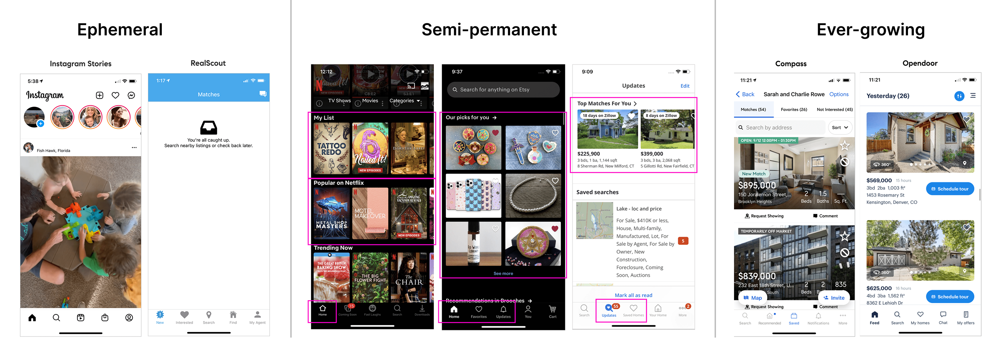
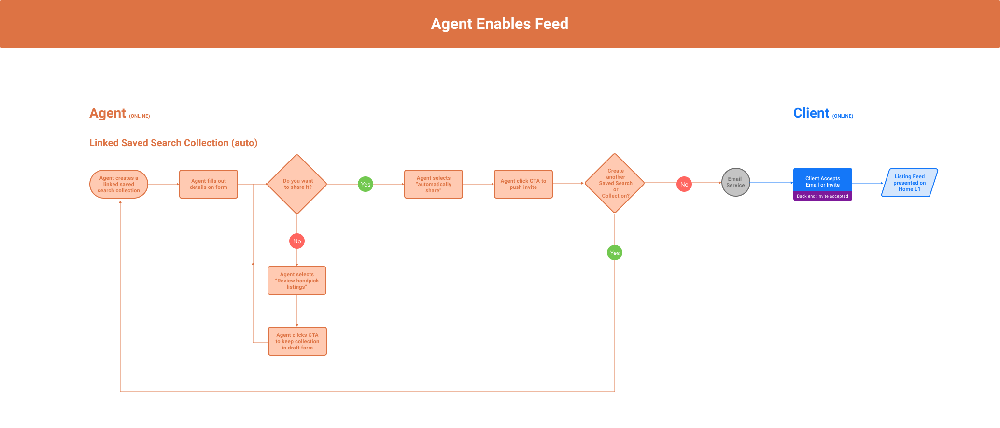
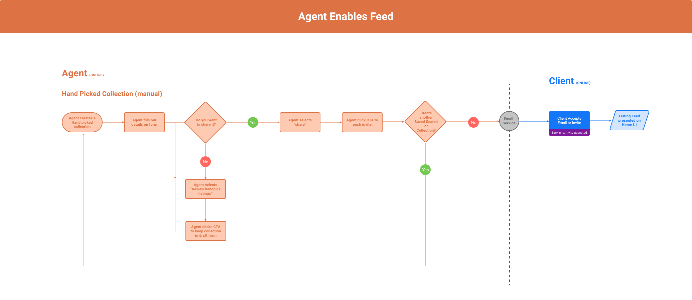
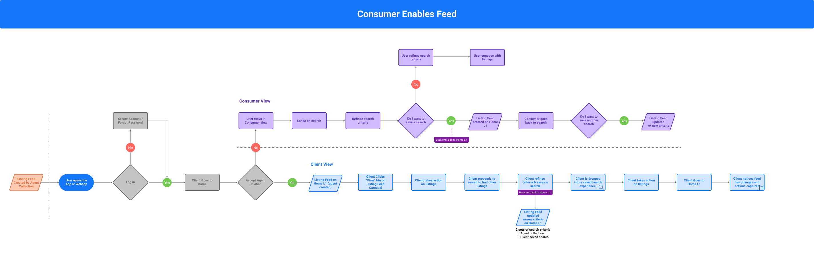
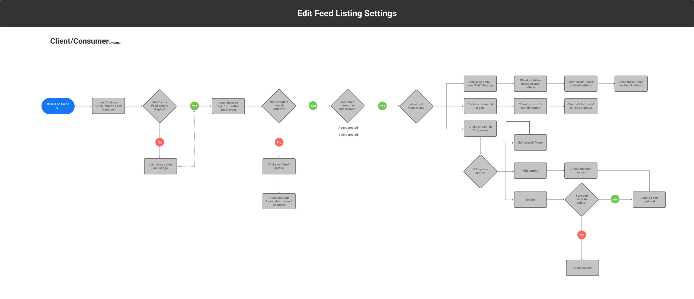

Problem
In the competitive era of real estate, consumers want to be on top of the market. Today, Compass does not possess a way to house all agent and client search criteria in a single location with the ability to inform updates on listings that match their criteria.
Goal
Create a centralized experience that clients and agents can stay on top of the market, collaborate, and modify criteria over time in a single location.
- DELIVERABLE
- Competitive Analysis Study, Requirements Gathering, Sketching, Prototype & Design Comps
- ROLE
- Senior Product Designer
- TOOLS & SOFTWARE
- Figma, Axure, Usertesting.com, UCD Research Methodologies & Google Analytics

Fragmented Experiences
- 1. Saved Items
- “Collections,” “Saved Searches,” and “Saved Buildings” can be created by either a client or an agent. The available collaborative features and visibility depend on who creates the space.
- 2. Device Misalignment
- One of the biggest friction points is the transition from a native iOS or Android experience to desktop, due to inconsistent navigation, labeling, and organization of information.
- 3. Client Setup
- Onboarding clients onto the platform was often cumbersome and time-consuming due to the complexity of the 'Saved Items' space and inconsistent experiences across devices.
Process & Research
Competitive Analysis, User Research, User Flows & Scenarios
Competitive Analysis
Following the initial kickoff, my first design artifact was a competitive analysis, which Compass refers to as LFR: Learn From Reality. This research offered valuable insight into how direct and indirect competitors approached similar experiences. The full list is seen here: Redfin, Zillow, Realator.com, StreetEasy, Opendoor, Homesnap, Trullia, Real scout, Home Depot, Disney & Airbnb
- Takeaways
- Competitors have similar overall structure, features, and services provided of current Compass experience.
Feed like experiences exist within our competitors' platforms, typically housed in separate navigation.
There is some nuance on content & labeling.
Opportunity to shake up the market with a new approach.

Conceptual Types of Feeds
Below are conceptual ideas of what the "feed" could be and how it might function within the Client Home: ephemeral, semi-permanent, ever-growing.
Ephemeral
- Pros
- Provides urgency for user to view & interact.
Fast pace, ever-changing of content.
Lightweight
Individual owns their content.
- Cons
- Not many applicable examples in the real estate market.
Fleeting after 24 hours; Feed forever store (hard to track down).
Could miss out on certain listings due to all new items in the feed.
Quality of content can vary depending on individual.
Could require more entry points from Client Home.
Semi-permanent
- Pros
- Preserves focus areas with separate 'new' and 'saved'.
Always something for the user to do or see.
Compare and contrast new vs. old/kept easily.
- Cons
- Not widely seen in real estate apps. Zillow and Redfin largely used recommendations or discovery.
Will need constant stream of 'new' content.
Does not encourage 'removal' or 'don't like' actions from the user.
Client could still miss out on a listing.
Listing matches live in more than one place - need for a 'Feed', 'Saved' and 'Home' space to separate.
Ever-growing
- Pros
- Relevant listings are all organized all in one place.
Most similar to how 'Collections' work today.
With everything in one place, surfaces and entry points can be streamlined.
- Cons
- Listing Feed can become overwhelming.
Harder to feel a sense of accomplishment and progression.
Heavy UI

Team Decision
Feed Type & Flows to enable it
Semi-Permanent
After extensive discussions with team members and stakeholders and taking prior user research into account, we have decided to move forward with a semi-permanent feed. This approach prioritizes new listings and previously favorited homes with updates, presented in a manageable list. Fear of missing out (FOMO) was a key concern raised in earlier research sessions and played a significant role in shaping our decision. However, users will still have the option to revisit older listings they did not take action on, if they choose to do so.
Enable Feed Flows
The next four images illustrate individual user flows for enabling the feed on Client Home. I prefer to separate flows into specific scenarios, as I find this approach communicates more clearly and effectively with stakeholders than a single, comprehensive flow diagram.




Research
User Testing & Findings
First Round Research
In the first round of testing, the 'Client Home' and 'Feed' were visibly separate products; each had their own place within the navigation. The hypothesis was that these products had their separate work streams, finding it easier to manage their home search activities.
Research Themes
- 1. The 'Feed' was separate
- Participants were unclear about the 'Feed,' mistaking it for all or saved listings. It wasn’t clearly differentiated from Client Home nor the notification that led them to the 'feed'.
- 2. Feed Settings
- Participants were unclear about what 'Feed Settings' would affect. Since they had not gone through the setup process or worked with an agent, their lack of deeper understanding was reasonable.
- 3. Filters
- I presented seven different types of filters which was seemed to be too much for participants.

Second Round Research
In this round of testing, the 'Feed' is part of 'Client Home'.
Research Themes
- 1. Combined 'Feed' and 'Client Home'
- The new combined Client Home and Feed experience was better received compared to the previous round of testing.
- 2. Feed Filters
- Limiting the number of filters on the Feed was positively received and helped reduce confusion in the overall experience.
- 3. Repeated Feedback
- In-app communication continued to stand out and The two-step triagaing process was confirmed as effective, and

Solution
High Fiedelity Designs
Solution
After multiple iterations and testing sessions, the integration of the feed into Client Home, now known as 'My Compass,' is complete.